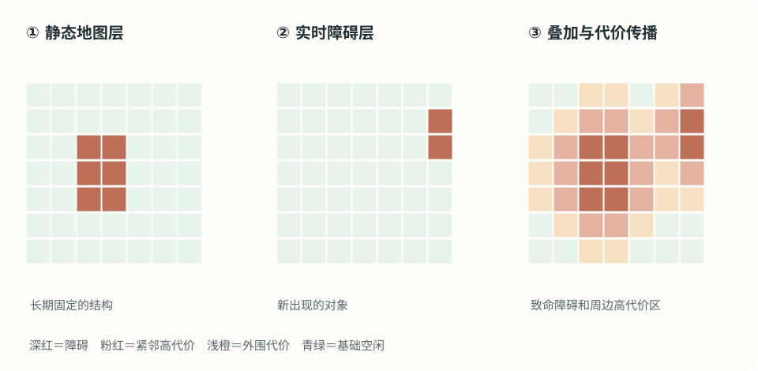
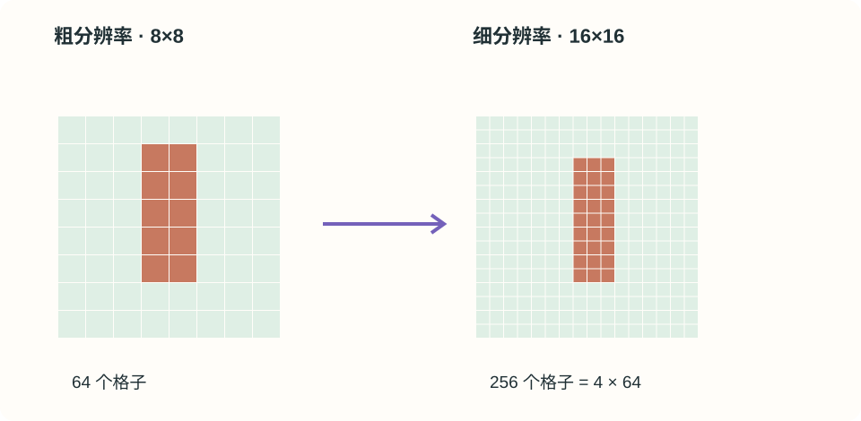

栅格地图与代价地图
同样是一张二维网格，占据概率、规划代价和未知区域的含义却不同。理解数据语义，才能相信算法的路径判定。
一幅地图的每个格子究竟记录什么
机器人不能直接拿一张“世界照片”给 A* 搜索。规划器需要查询：这个位置是空闲、被占据，还是尚未被观测？最常见的离散表达是占据栅格地图（occupancy grid）。在一个固定的二维坐标系里，格子有分辨率 r（米/格）和原点位姿，每个格保存占据证据或分类值。
传感器可对单个格子给出概率 p∈[0,1]，其中接近 0 倾向空闲、接近 1 倾向占据。但未知不等于确认空闲：未观测的格子与观测后概率恰好接近 0.5 的格子，在某些概率表示下相近，而在用于规划的离散消息中通常要保留“未知”的独立编码。
MAPPING SYSTEM · 04
占据概率怎样累积证据
在概率建图中，可以对每个格子的占据事件维护对数几率 logit(p)=ln(p/(1-p))。当使用一致的逆传感器模型、参考先验和条件独立近似时，多次观测可用加减法累加：
这里 lt 是当前 log-odds，psensor 是本次逆传感器模型给该格的占据概率，p0 是预设先验。这个公式不意味着所有激光束都能被当成完全独立证据；实际还需要考虑射线穿透、遮挡、观测相关性与截断值。
例子：先验 0.5，第一次传感器给出 0.7 的“占据证据”，得到后验 0.7；第二次给出对称的 0.3，在此简化独立近似中恢复到 0.5。该数值计算是教学演算，不是对真实定位精度的报告。
三个不同的数值系统，不要混用
“地图里一个格等于 100”这个说法若不说明消息类型，很容易导致严重误解。需要区分概率模型、ROS 2 的 nav_msgs/msg/OccupancyGrid 消息，以及 Nav2 costmap_2d 的内部代价编码。
| 表示层 | 常见约定 | 不能直接推断的内容 |
|---|---|---|
| 概率模型 p | 0 到 1，表示占据概率 | 无法仅凭 p=0.5 判定“未知”的传感器历史 |
| ROS 2 OccupancyGrid.data | 常见 −1 未知、0 空闲、100 占据；中间值按应用解释 | 不等同于 0–255 的内部 Nav2 costmap |
| Nav2 costmap_2d 代价 | 0 可通行基础值，253 内接膨胀区、254 致命障碍、255 未知 | 普通非零代价不等同于占据概率 |
ROS 2 消息中的值常被解释为 0–100 占据等级，但消息定义也说明它依赖应用。Nav2 内部的 253、254、255 是特定常量，最终发布到 OccupancyGrid 主题时还可能经过值域转换。Nav2 发布转换源码可帮助核对这种区别。
代价地图为什么有图层
在导航系统里，静态地图不会及时表达刚刚出现的人或推车；障碍物层负责用传感器更新临时障碍，膨胀层把障碍周边变成逐渐增加的代价，以便规划器倾向留出安全余量。Nav2 可组合的图层不止这三种，具体插件与顺序由配置决定。
MAPPING SYSTEM · 04

对采用 InflationLayer 的导航配置，inflation_radius 控制膨胀作用范围；cost_scaling_factor 控制代价下降陡峭程度。地图某格“非零代价”并不总意味着绝对不可进入，通行策略由全局规划器、足迹与碰撞阈值一起决定。
地图分辨率如何改变计算量
对于物理面积 A 和等边方格分辨率 r，所需格子数约为 A/r²。以 20 米×20 米的区域为例，分辨率 0.10 米得到 200×200=40,000 格；0.05 米得到 400×400=160,000 格，单图格子数量变为四倍。若每格仅一个字节，原始数组分别约为 40 kB 与 160 kB（不含其他元数据及图层）。
MAPPING SYSTEM · 04

分辨率越高不必然更安全：输入传感器本身存在噪声和盲区；过细的栅格也可能造成破碎的占据估计，并放大搜索规模。必须结合足迹尺度、定位误差、感知分辨率和规划周期共同选取。
把世界坐标落到一个格子里
索引转换经常是“看不见”的导航 bug。假定地图原点没有旋转，分辨率为 r，世界坐标 (x,y) 对应的列号与行号由向下取整得到。若原点包含旋转，必须先做逆位姿变换；以下代码故意只覆盖轴对齐情形，并且展示 x 在原点左侧会得到负列号。
import math
def world_to_cell(x, y, origin_x, origin_y, resolution):
"""假设地图坐标轴与世界坐标轴平行，且 resolution > 0。"""
if resolution <= 0:
raise ValueError("resolution must be positive")
col = math.floor((x - origin_x) / resolution)
row = math.floor((y - origin_y) / resolution)
return row, col
assert world_to_cell(1.24, 2.34, 1., 2., 0.1) == (3, 2)
assert world_to_cell(0.99, 2.00, 1., 2., 0.1) == (0, -1)
def logit(p):
if not 0 < p < 1:
raise ValueError("p must be strictly between 0 and 1")
return math.log(p / (1 - p))
def sigmoid(log_odds):
return 1.0 / (1.0 + math.exp(-log_odds))
prior = 0.5
log_odds = logit(prior)
log_odds += logit(0.7) - logit(prior) # 一次“占据”证据
assert abs(sigmoid(log_odds) - 0.7) < 1e-12
log_odds += logit(0.3) - logit(prior) # 一次相反证据
assert abs(sigmoid(log_odds) - 0.5) < 1e-12
print("Map tests passed")运行 Python 3.10+ 即可检查正负边界、半开格子区间和概率更新算例。将该代码用于真地图前，仍需检查地图的宽高界限、origin 的 yaw、坐标系时间戳以及传感器/机器人姿态转换。
安全边界与常见错误
- 把未知当空闲：对探索任务可能是允许的策略，对人群或设备密集的部署却可能危险。策略必须显式配置。
- 斜向切角：即使起终点格空闲，对角线跨越被占据角点也可能发生碰撞。
- 足迹与膨胀重复计算：使用多重安全余量可能无意堵死走廊；完全没有余量也可能导致擦碰。
- 动态障碍残留：只“标记”不“清除”可能把临时障碍变成永远的不可通行区域。
地图不是中立的数据容器。规划的每一个假设都必须落实到其分辨率、数据编码、图层语义、足迹和更新时序。